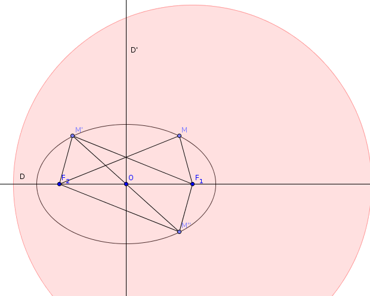

| Choisissez votre langue ! | Choose your language ! |
Suite à l'étude du cours sur les ellipses 'historiques' et leurs propriétés, on s'intéresse à l'ensemble des points M du plan tels que MF1+MF2=2a. (a constante positive) où F1 et F2 sont deux points du plan,.
Préciser quel est cet ensemble quand les points F1 et F2 sont confondus.
Caractériser les éléments de symétrie de la figure quand F1 et F2 sont distincts.
Montrer qu'il s'agit d'un ensemble borné.
aide
Considérer la droite (F1F2) et la médiatrice de [F1F2].
solution

Si F1 et F2 sont confondus, l'ensemble est le cercle de centre F1=F2 et de rayon a.
Dans le cas contraire, si M vérifie MF1+MF2=2a , alors il en est de même de son symétrique par rapport à (D1D2) et de son symétrique par rapport à la médiatrice de [D1D2].
Ces deux droites orthogonales sont donc des axes de symétrie de la figure.
Leur intersection, qui est le milieu O du segment [D1D2] est donc un centre de symétrie pour la figure.
Dès que MF1 > 2a on a MF1+MF2 > 2a.
L'ellipse est donc toute entière contenue dans le cercle de centre F1 et de rayon 2a.
C'est donc un ensemble borné.
Following the study of the course on 'historical' ellipses and their properties, we are interested in the set of points M of the plane such that MF1+MF2=2a. (a positive constant) where F1 and F2 are two points in the plane,.
Specify what this set is when the points F1 and F2 coincide.
Characterize the symmetry elements of the figure when F1 and F2 are distinct.
Show that it is a bounded set.
hint
Consider the line (F1F2) and the perpendicular bisector of [F1F2] .
solution
If F1 and F2 coincide, the set is the circle with center F1=F2 and radius a.
Otherwise, if M satisfies MF1+MF2=2a , then so does its symmetric with respect to (D1D2) and sits symmetric with respect to the perpendicular bisector of [D1D2].
These two orthogonal straight lines are therefore axes of symmetry of the figure.
Their intersection, which is the midpoint O of the segment [D1D2] is therefore a center of symmetry for the figure.
As soon as MF1 > 2a we have MF1+MF2 > 2a.
The ellipse is therefore entirely contained in the circle with center F1 and radius 2a.
It is therefore a bounded set.
|
Création Gilles Dubois - licence CC-BY-SA
Created by Gilles Dubois - licence CC-BY-SA
|
Septembre 2023
September 2023
|
Version mobile Jquery
Mobile Jquery version
|
|